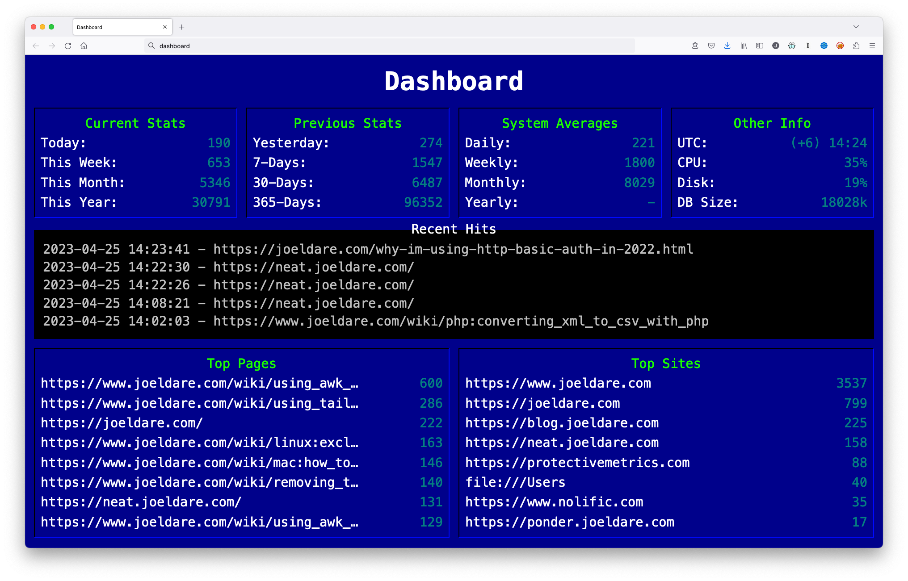

In 2022, I became increasingly concerned about the privacy of my website users. As a website owner, I wanted to know how many impressions my websites were serving, which pages were being viewed right now, and which pages were most popular. However, I didn't want to collect any personally identifiable information, nor did I want to use cookies or any other invasive tracking technologies.
To solve this problem, I decided to create my own analytics program. I wanted to make it fun and nostalgic, so I based it on the Renegade BBS "waiting for caller" screen from the early 1990s. I designed the dashboard and programmed a simple backend.
Because it's becoming increasingly rare, and because I wanted to re-create the nostalga of running a BBS in my youth, I decided to host the service on a Raspberry Pi in my home office. There were some minor challenges but I got everything working the way I wanted it.
One of the best things about my analytics program is that it doesn't create cookies or anything similar. Instead, it tracks only details about impressions or requests made for pages on the website. This means that I can track popular pages without collecting any personally identifiable information.
Another important feature is that it doesn't log visitor IP addresses. This is something that many other analytics programs do, but it's a violation of privacy because you can find a users general location, their internet service provider, and similar private details. Instead, my program only collects aggregate data about impressions on my own websites.
Even the most popular analytics programs often overestimate the number of unique visitors and pageviews due to a variety of factors such as bots, spammers, ad blockers, and users who disable JavaScript. In fact, a study conducted by the Interactive Advertising Bureau found that more than half of all internet traffic is non-human. This means that relying solely on visitor statistics can lead to flawed decision making and misguided marketing efforts. Protective Metrics is no acception, but it also doesn't pretend to track unreliable statistics like "visitors". Instead, I believe that website owners should focus on a variety of metrics, including site traffic, user engagement, conversion rates, and customer feedback to get a more accurate picture of their website's performance.
Overall, I'm incredibly happy with the analytics program I created for my own websites. Not only does it preserve the privacy of my users, but it also gives me valuable insights into how people are viewing my content. I created Protective Metrics in the hope that other website owners will start prioritizing user privacy on their own sites. By tracking impression metrics with a commitment to user privacy, website owners can create a better user experience and build trust with their audience.
Written for Protective Metrics by Joel Dare on April 25, 2023.